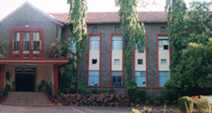

The Government Polytechnic, Pune, was established in the year 1957. Thirty seven years later, in May 1994, the institute was awarded academic autonomy. Today it houses in its 28 acre campus, a main building, students hostels, classrooms for various faculties including Electronics & Computers, Library, Canteen, post office and other facilities and has the capacity to groom more than 300 students in various engineering fields every year. |
 |
Over the last four decades, the institute has produced more than 8000 diploma engineers in different disciplines, has won several awards in academics as well as socio-cultural activities and on the whole has succeeded in contributing humble positive efforts towards the building of a progressive society.
The institute is located in India's second largest industrial town - Pune, particularly known for its thriving automobile industry and software business. The Government Polytechnic is located on Rajbhavan Road near Pune University campus hardly 7 k.m from the Pune railway station and 20 k.m from the Airport.
The institute lays particular focus on bringing the curriculum in tandem with current industrial requirements and developments. With employment being an equally crucial aspect of modern education , the institute is particularly keen on keeping a persistent link between academics and industrial realities so as to make students proficient to meet the demands of the industry. Towards this purpose it has formed various committees with substantial industrial representation.